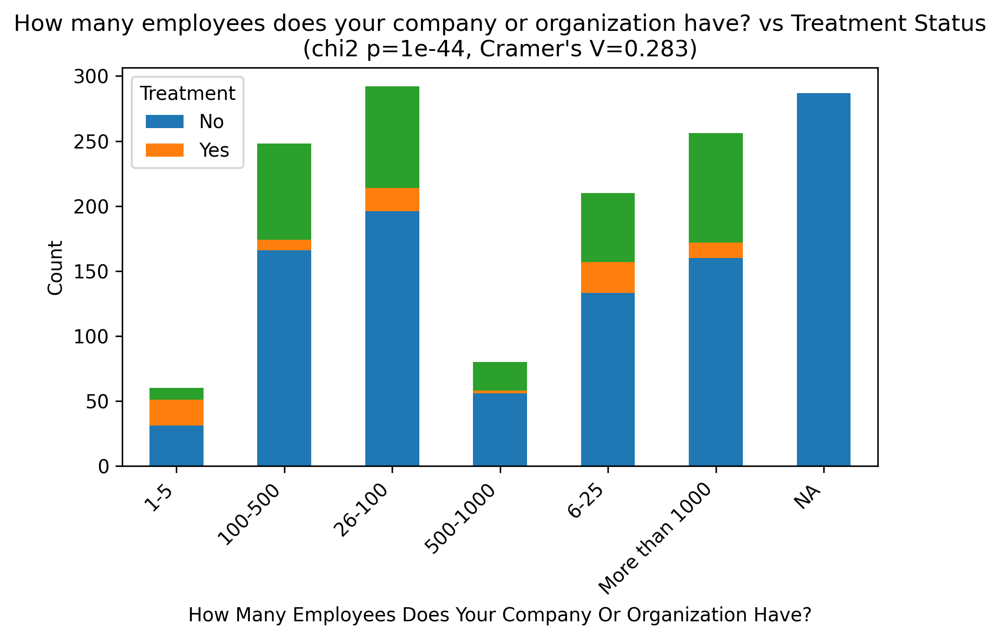
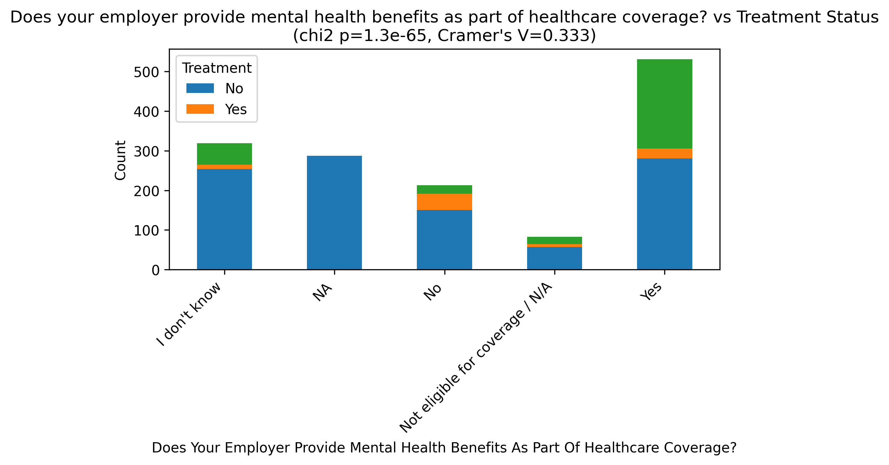
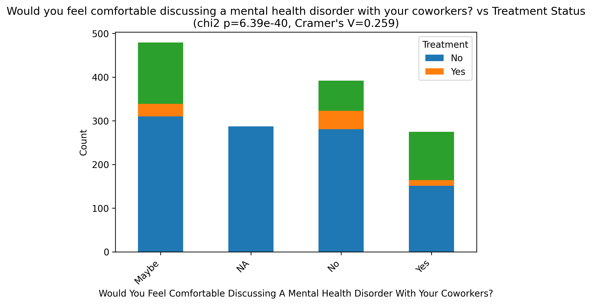
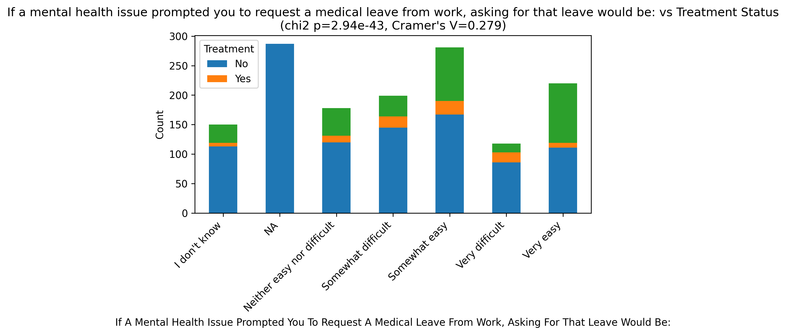
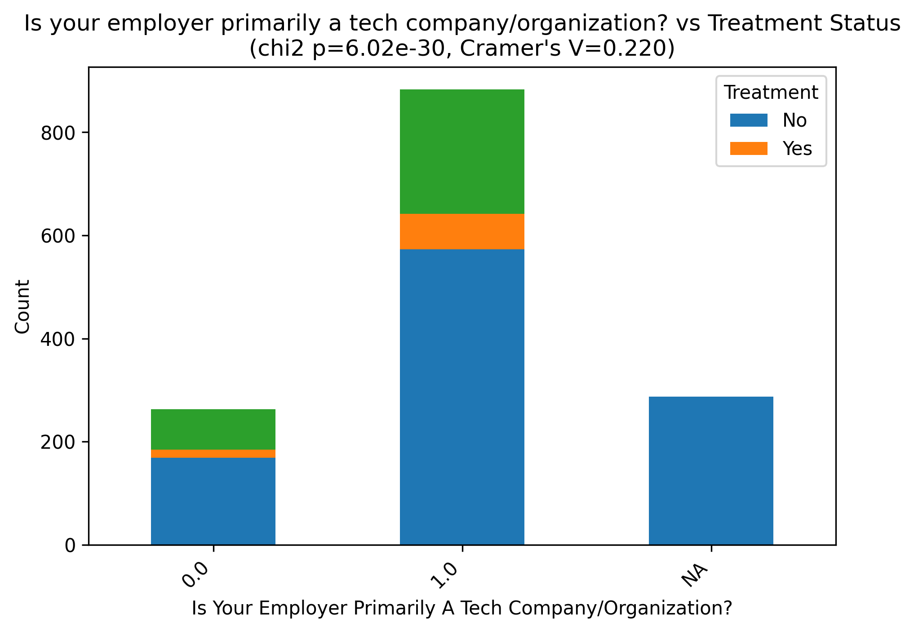
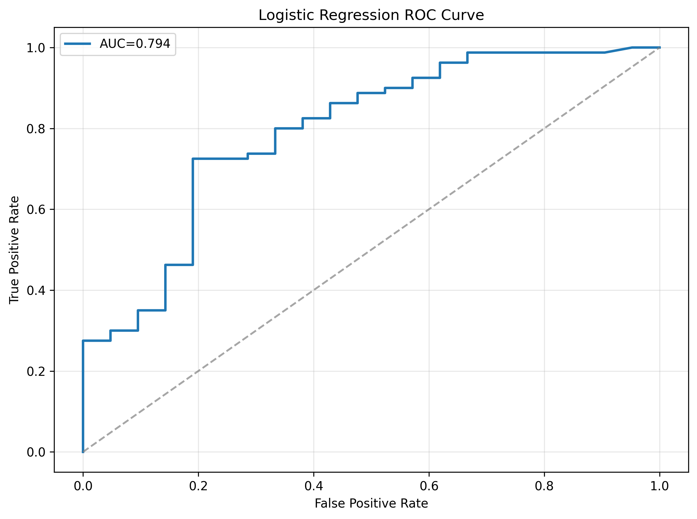
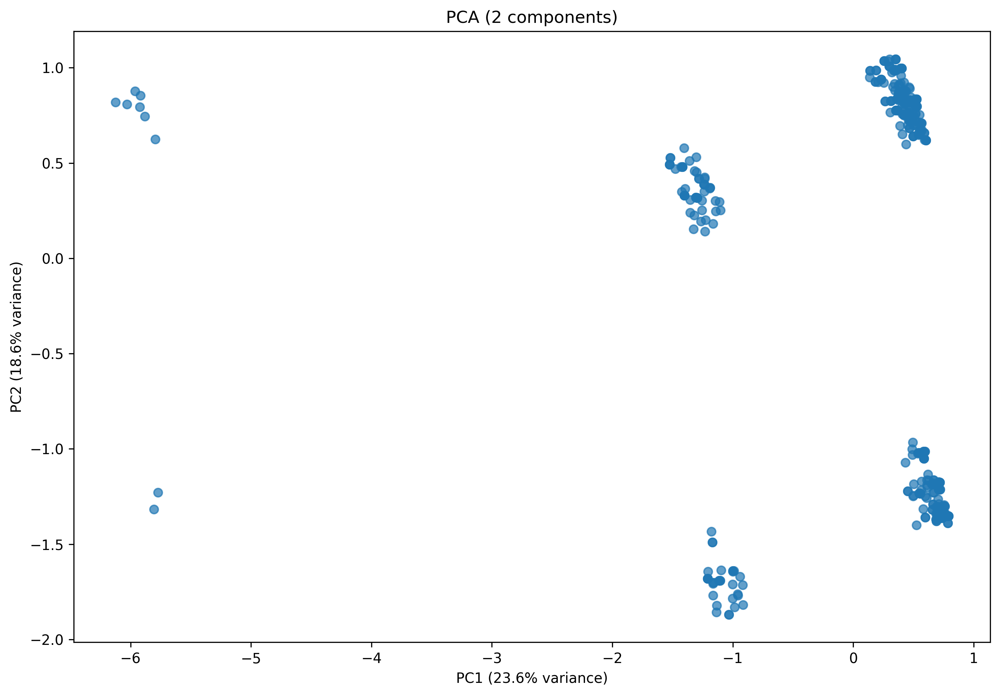
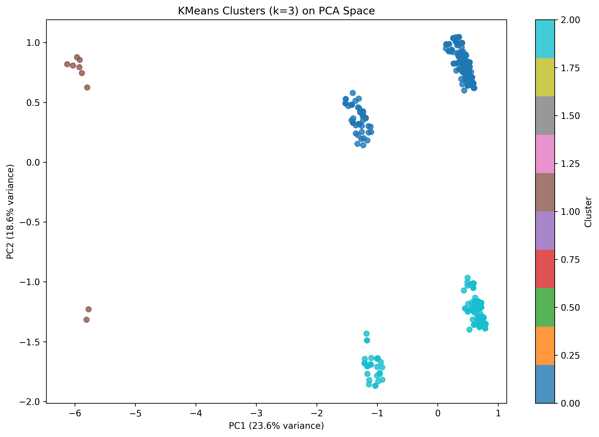
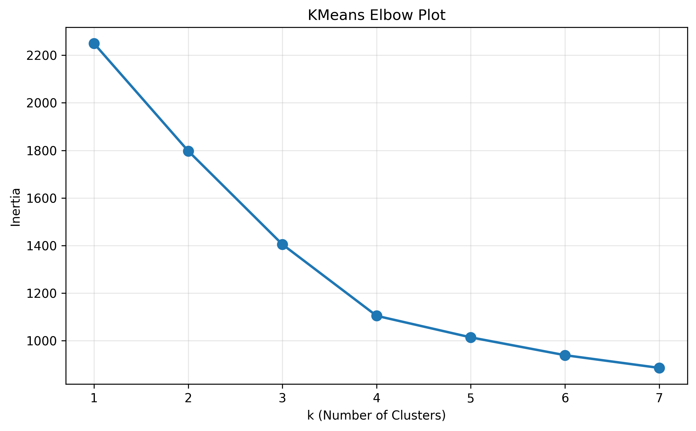

🎯 Key Insights
- High Treatment Rate: 79.2% of respondents have sought mental health treatment, significantly higher than general population
- Employer Benefits Matter: Mental health benefits coverage shows the strongest association with treatment seeking (p < 1e-65)
- Company Size Impact: Larger organizations show different treatment patterns than smaller companies
- Workplace Comfort: Comfort discussing mental health with coworkers strongly correlates with treatment seeking
- Predictive Accuracy: Machine learning model achieves 84.2% accuracy in predicting treatment behavior
📊 Statistical Analysis Results
🏢 Company Size vs Treatment Seeking
Larger companies show higher rates of mental health treatment seeking, likely due to better benefits coverage.
🏥 Mental Health Benefits Impact
Strongest predictor of treatment seeking - employees with mental health benefits are significantly more likely to seek treatment.
💬 Workplace Comfort Level
Employees comfortable discussing mental health with coworkers are more likely to seek professional treatment.
🏃♂️ Medical Leave Ease
Perceived ease of requesting mental health leave correlates with treatment seeking behavior.
🏢 Tech Company Analysis
Working at primarily tech companies shows association with mental health treatment patterns.
👥 Workplace Consequences

Observing negative consequences for others affects individual treatment-seeking decisions.
🤖 Machine Learning Analysis
Model Performance Metrics
📈 ROC Curve
Receiver Operating Characteristic curve showing model's ability to distinguish between treatment seekers and non-seekers.
🎯 Principal Component Analysis
2D projection of the data colored by treatment status, showing natural clustering patterns.
📊 K-Means Clustering
Unsupervised clustering reveals distinct groups in the mental health survey responses.
📉 Cluster Analysis
Elbow method for determining optimal number of clusters in the dataset.
📋 Analysis Summary

Comprehensive overview of the analysis including demographics, treatment patterns, and model performance.
📄 Data & Downloads
📊 Statistical Results
📈 Cleaned Dataset
🔬 Methodology
- Data Source: OSMI Mental Health in Tech Survey 2016 (1,433 responses)
- Statistical Tests: Chi-square tests for categorical associations, Cramér's V for effect sizes
- Machine Learning: Logistic Regression with cross-validation, PCA, K-means clustering
- Preprocessing: Missing value imputation, categorical encoding, feature scaling
- Validation: Stratified 5-fold cross-validation, hold-out test set evaluation